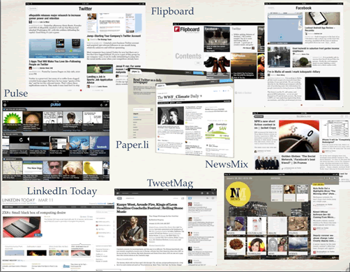

(25 March 2011)
During my recent talk at the 3rd InnoFORUM on the subject of "Social Magazines" I displayed the following slide:

Seen any of these before?
Digital magazines made up of content that your network(s) of friends and colleagues talk about on Twitter, LinkedIn or Facebook? Perhaps ones made up of content sourced from your favourite news sites and blogs?
“Social Magazines” are a class of applications (web based or otherwise) that primarily present content discovered due to one’s social (connections) network graph, preferred content feeds and/or some measure of popularity by a community.
Looking at it closer, one observes that social magazines exploit the fact that people tend to share content discoveries and news. Not only that, but we also curate and annotate these (perhaps in order to express opinion and/or point out significance and/or context).
As a result social magazines use one’s online connections (such as Facebook "friends", Twitter "follows" and lists, favourite blogs' RSS, etc.) in order to drive content selection. Ergo such connections combined with some algorithmic pixie dust play the role of the “magazine’s editor”.
Not so long time ago, I remember that social (network) activity was happening in BBSs (Bulletin Board Systems) where 300/1200 Baud modems were used to express opinion, set up interest groups, flame, discuss, follow stories and make friends. These were some of the first social networking platforms available to the "wide" public.
Akin to Facebook fan pages, Facebook groups and Twitter hashtags, with USENET groups we followed (and still do) topic-specific newsgroups around which virtual communities flourish(ed).
When mailing lists were popular, many used to send (and still do) a daily email with the top discussions summarised. By the way, do you remember when companies used to pay to receive daily news clippings through FAX?
Lets remind ourselves about the "portal wars" for a moment. Portals such as the ones by Compuserve, AOL, Excite and Yahoo were the first Web-based content aggregators much before newspapers and media dinosaurs began to blame Google for their problems. Few years later, people discovered (surprise surprise) that the Web can be social and started publishing "user generated content" -- to which RSS feeds became the de-facto means for multicasting. Of course we immediately wanted to subscribe to all interesting RSS feeds as many do with tweets today. Our unarticulated information crave led to the surfeit of RSS aggregators and to the emergence of "smart RSS readers" (which failed commercially not because of technology but due to business models eg., Findory and Feeds2 were really good filters).
Alas, with the risk of sounding like an old fart I have to remind us that "(much of) the Zen has happened before" so why all the rage now? Well...
Lets consider the following:
The above (almost truisms) outline only some of today's context in which social magazines have emerged. In fact it is that much of the disruptive technologies necessary to support the demand and implementation of social magazines have crossed the chasm to become adequate or even mainstream. As a result many incumbents are to suffer or completely vanish as the "Innovator's dilemma" teaches us. However, the need has always been there.
To appreciate the degree of disruption caused to old/print media, one has to examine the value-chain of these organisations in order to discover that about 60% of the total cost of delivering dead-tree editions lies with processing and distribution.
All these years most of the cost and very much of the value has been in delivery (from trucks, to the paper format) and not in the content per se.
Then, when we consider that a) advertising budgets are pretty much finite, b) electronic channels through which audiences can be engaged are pretty much infinite and c) textual and video content can be produced on the cheap by anyone, it is not difficult to conclude that we're about to experience what social magazines will do to traditional magazines and newspapers... and it aint pretty.
Magazines have always been a kind of filter, where human editors and authors do the hard work of curating, selecting and producing topical content in a pleasant format.
With social magazines we use our social network graph to achieve the same effect.
However, this method breaks down when we “follow” too many or have too many “friends” and they are interested in too many topics. It follows therefore that in the near future we can expect intelligent social magazines to spring up everywhere. These, through the marvels of machine learning present content relevant to one's interest (not just what one's friends talk about). My view is that although few of them exist today, we're still away from what they should ideally be. So I believe that this is one space that much will happen in the coming years.
What happened to music albums with broadband connections , Napster and iTunes, is already happening with (news) content, though in this case it is much more complicated and uncontainable for the incumbents.
This time they don’t even have piracy to blame because we can produce the news, critique, analysis and valuable content!
In this future it will be perhaps harder and certainly different for propaganda to spread, but also to be identified. I will be more difficult to find and trust a single source and more difficult to filter out the noise. It will also be more pressing to assess one’s reputation, position and discover the antithesis and counterpoints.
So I suggest that human and machine intelligence better collaborate well to help us quench our information crave and discover truth at the same time. As for media revenue models, well that's another story...
(05 May 2010)
If you are like me, you share pertinent information with friends and colleagues. It seems it is in our nature, almost as a modern day gift culture, to provide others with what we deem to be valuable information for their benefit. Doing so is not free, because we expend some effort.
Every time we send someone an 'FYI' email about an article, an event, a product or some news, we are likely to make sure it is relevant to that person's interest and activities. We make this activity valuable because we usually care enough and have sufficient context about that person to know it is worthwhile for both parties. In effect, we act as extremely well targeted recommenders of information for that person.
Every time we 'retweet' or write a review, we provide each other with a filtering service, albeit a less targeted one. People typically try to be of genuine service hence we are likely to trust a friend's recommendations more than most other sources in making decisions.
Someone's valuable info is someone else's noise of course. As a result, we are each other's filter and everybody's noise.
Growing up, I have found a very useful content recommendation mechanism; this of magazines. My favourite ones, above all, have been good filters due to their topical and periodical nature. They have supplied me with a cogent view of current and important content to suit my interests. This mechanism, combined with my social network has provided me with a decent filtering service; a service that I have been paying money for.
In the era of 'mass customisation' and online access we tend to make our own magazine-like contraptions by means of assorting news feeds, blogs, life-streams and other sources. In doing so, we're free to discover and choose our content; and we're happy with this.
Until of course we get interested in too many things, we get overworked, we end up subscribing to too many feeds, we keep on discovering more info than we can process and we can't even afford to pick up a print-magazine over the weekend because our cognitive channels are already saturated (and note that I'm not even touching on e-mail overload here). What do we do then?
Tune out of life's proceedings? Stay behind in our field, dispense with current news and avoid tracking developments?
I don't think so. If you're here with me it is too late for that as you have most likely realised (or you should) that the battle for our attention is in progress.
As Prof. Herbert A. Simon succinctly said in 1971,
"in an information-rich world, the wealth of information means a dearth of something else: a scarcity of whatever it is that information consumes.
What information consumes is rather obvious: it consumes the attention of its recipients. Hence a wealth of information creates a poverty of attention and a need to allocate that attention efficiently among the overabundance of information sources that might consume it"
Like any other limited resource, we must expend our attention wisely. To do so we must realise who and what our filters are and make the best use of them.
Professional journalism was invented largely because we developed the need for gathering and reporting of information scattered 'out there'; which to be honest feels a lot like professional filtering to me.
In this era of overabundance of information, we clearly need to be better at protecting our cognitive resources. I can't stop thinking that somehow we need to team up man and machines to provide us with adequate ways to do so.
Of course, some companies that deal with our data every day have realised this but unfortunately are asking us to promiscuously trade our privacy as well. Privacy though, is another scant resource that in many cases is impossible to recoup.
In terms of paper-less publishing, production, delivery and discovery of content online is cheap and getting cheaper, especially when compared to our limited attention. It is my expectation that as so many people have capitalised on their ability to produce content, others will find out that profit is to be made of their ability to filter it.
It is perhaps obvious to you too that increasingly more and more value will exist not with production and discovery of content but with permitting the right amount to consume our attention.
Content production is essential, but if you can't get to it, its value is missed. When you over-produce and are able to access so much of it, its value drops again unless you can filter out what you need. Even more vital is to filter it when it flows toward you. As it happens, production, discovery and free consumption of content are now taken for granted, whereas filtering isn't.
I believe that we will end up trading some resources for better filtering; and whoever does this right will profit.
(13 April 2010)
Beyond my expectations the "Paper-less publishing, no ads please" session had 35 attendees from diverse disciplines. Its unexpected popularity did not allow us to run it as a BoF and therefore I had to alter its format on the spot. For that matter many of you were left wanting more. Many also pointed out that I didn't conclude the presentation with specific answers to what is the best non ad-based revenue model for on-line publishers, just hints and good food for thought.
In the future I hope that we can repeat it. I also promise to restructure the session for higher attendance. In addition and since many of you asked me, I will also attempt to run smaller workshops as well. In the mean time I will try to provide some answers.
During the session each participant was asked to suggest a plausible revenue stream for paper-less publishing, which we then clustered. From this exercise the following non ad-based revenue streams were suggested:
Charging for contentAbove, I have attempted to further categorise the clusters (meta-clustering?) in order to make them easier to remember.
I don't want to suggest what is the best solution for each one as I don't believe there is a silver bullet.
Having said that, I believe that the first category is suitable for publications where timeliness and scarcity of publicly available information benefit the beholder of the content and thus make them willing to pay for it. I also think that donations probably won't work either.
Sponsorship models which are a form of advertising, in my opinion run the risk of alienating the audience and/or the sponsor in a tick of the clock. A publication needs to build and maintain trust with its audience which is always one click away from its competition (and so are advertisers). Transparency is critical and trust is a hard earned currency that can be lost in a split second and may never be earned back again. I feel that in the case of sponsorship models the balancing between sustainable profits, opinion, objectivity and trust is extremely difficult to achieve and then maintain. Consequently it is very risky to bet money on.
The current trend towards e-tailing, is in my view very healthy and one that we'll see being adopted (and evolved) more and more. Monetising audiences through the direct sale of goods (tangible or otherwise) is the next common-sense step for publishers on-line. I also consider the sale of applications (mobile or otherwise) a very important part of this mix.
Matching recommendation services with e-tailing in my view will be pivotal for the future of paper-less publishing.
I was happy to see that this idea of recommendations and filtering intermediaries emerged in the session. Something that I wish we had more time to examine. Although it may sound exotic to include recommender systems within a publication, we have to note that a magazine is effectively a crude filter (and thus a sort of a recommender). In a magazine, the editor and publishing team create and assort for the benefit of the audience relevant material and thus filter out what is not important. When we consume a magazine, someone else has already done a lot of the information gathering and filtering for us!
The function of a media company is to acquire, maintain and monetise audiences.
For non-financial paper-less publications (that are not of the massive scale of Yahoo for example), I believe that sustainable monetisation can be achieved with a mix of revenue streams that do not vitally and solely rely on advertising.
Paper-less publications + e-tailing + recommenders in my opinion mix very well together.
I hope that we can discuss about all these in the future:-)
(13 April 2010)
You are welcome to attend a BoF session at the 3rd Media Camp Athens event. As I am organising this session on non advertising-based revenue models for paper-less media, I'd like to gauge interest in the above subject.
Are you also thinking that traditional print-media business models don't make sense in the epoch of paper-less publishing? Probably yes, that is why I'd like to invite you to this session.
During the BoF we will discuss about sustainable revenue models for paper-less publishing (with a focus on magazines and newspapers) that are not based on advertising.
My observation is that advertising prices will not go back to their old price levels and that the "analogue dollars to digital pennies" trade-off experienced with on-line advertising will get even worse. As a result I cannot see how existing business models which primarily rely on advertising can support publishers on-line.
Today, traditional print-media publishers (on-line and off-line) have to deal with the overabundance of free and good enough content on-line. The plethora of channels created by on-line (amateur) publishers has created an unprecedented over-supply and hence value destruction that is pushing ad inventory prices down. Such pricing cannot support the print-media habits of the past.
“It makes increasingly less sense even to talk about a publishing industry, because the core problem publishing solves — the incredible difficulty, complexity and expense of making something available to the public — has stopped being a problem.” -- NYU Prof. Clay Shirky March, 2009.
At the same time it seems that on-line advertising is increasingly failing as audiences are learning to technologically and mentally filter-out ads. This is so, because "The problem is not the medium, the problem is the message, and the fact that it is not trusted, not wanted, and not needed", as Prof. Eric K. Clemons from The Wharton School of the University of Pennsilvania puts it.
So, if you are interested in paper-less publishing come to this BoF session!